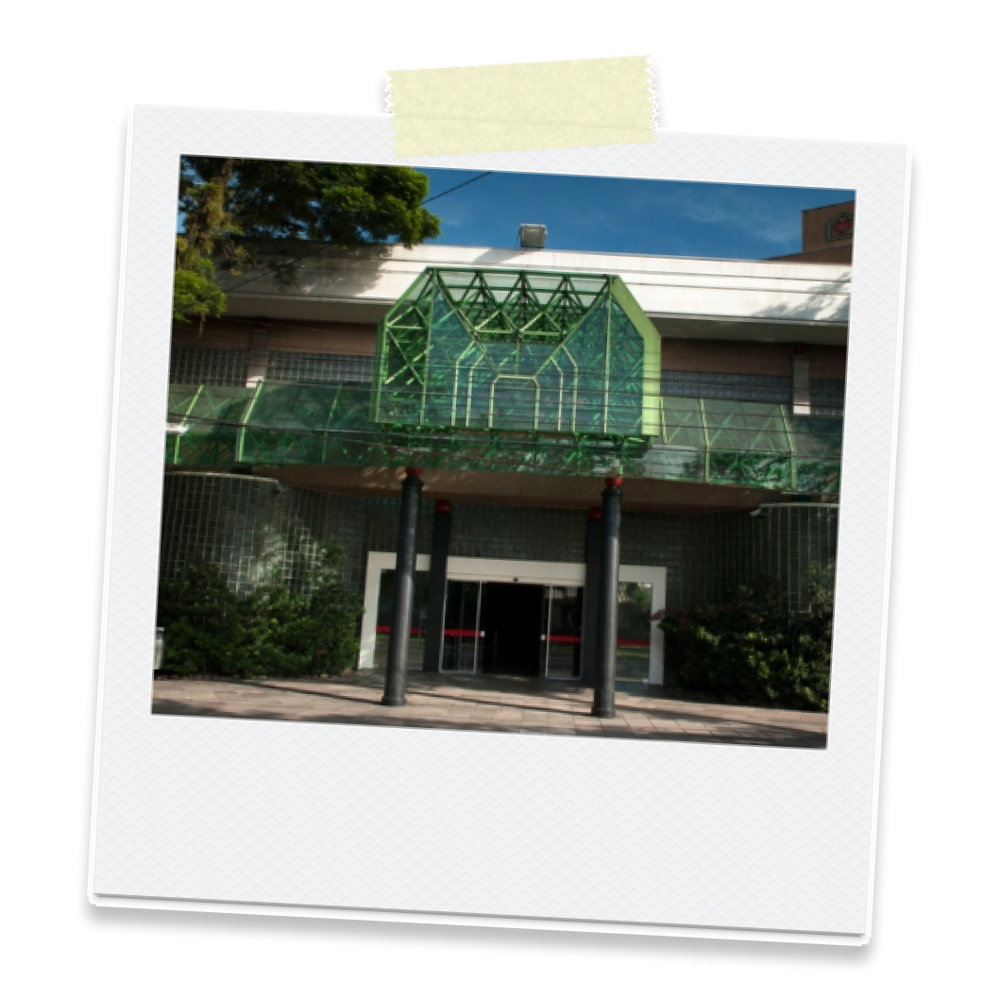

Hospital Santa Clara
Complexo Santa Casa
Rua Professor Annes Dias, 135
Centro Histórico, Porto Alegre - RS
Hospital Ernesto Dornelles
Av. Ipiranga, 1801
Azenha, Porto Alegre - RS
Instituto de Cardiologia
Av. Princesa Isabel, 395
Santana, Porto Alegre - RS

Ulbra Canoas
Av. Farroupilha, 8001
São José, Canoas - RS
Hospital da Brigada Militar
R. Dr. Castro de Menezes, 155
Vila Assunção, Porto Alegre - RS